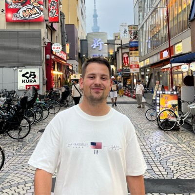
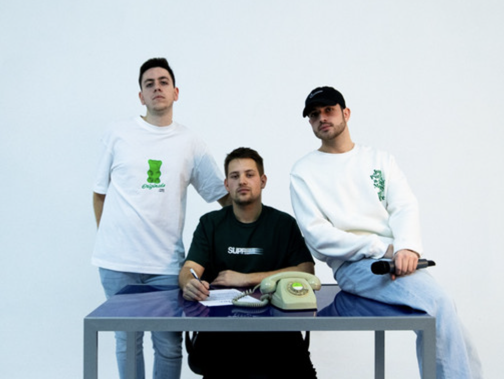

Felipe Basurto

Solutions Architect at Multiverse Computing (Madrid), working on LLM compression and CompactifAI: demos, PoCs, and customer-facing work where model efficiency meets cost, latency, and deployment in the real world. That—solutions engineering and applying AI in production—is what I focus on.
Cursor Madrid Ambassador (community, meetups, workshops). On the side I keep hobby iOS projects and music; they’re outlets to experiment with AI and build small things, not a second career.
Experience
Nov 2025 — present
Solutions Architect at Multiverse Computing (Madrid). Pre-sales around CompactifAI (LLM compression): technical demos, prototypes, and PoCs across finance, manufacturing, retail, and healthcare. Connecting model-efficiency choices to cost, latency, and deployment tradeoffs for engineering teams and leadership. Working with infrastructure partners on cloud and on-prem architecture. Details
In parallel (not the day job):
 Cursor Madrid Ambassador (since May 2025). Meetups, workshops, and collaborations with coworkings, startups, and universities. Details
Cursor Madrid Ambassador (since May 2025). Meetups, workshops, and collaborations with coworkings, startups, and universities. Details- Hobby / side project — Encore: Concert Diary (since May 2025). iOS in Swift / SwiftUI (concert feed, stats, friends, passport, upcoming, wrapped); I use it to try ideas and AI-assisted workflows, not as a primary business. Shipped on the App Store; $2k+ revenue; short-form video for discovery. App Store (US) · Site (ES) · Details
Jul 2023 — Nov 2025
Data Scientist at AILY LABS (Madrid). Production agents on LangChain and Langfuse (retrieval, tools, guardrails). Built a Graph RAG pipeline (unstructured.io + Neo4j + LangChain) that turns legacy manuals into cited chunks exposed over an API for downstream models. NLP and time-series pipelines in SQL/Python for operational forecasting. MLOps on AWS (Apache Airflow, Docker, CI/CD, monitoring); cut an internal ETL from ~1.5h to ~15s. Details
2023
 Computer Vision intern at FITIZENS (Madrid). Human Pose Estimation with OpenCV and MediaPipe; demos in Streamlit. Details
Computer Vision intern at FITIZENS (Madrid). Human Pose Estimation with OpenCV and MediaPipe; demos in Streamlit. Details
2022 — 2023
Master's in Business Analytics and Big Data at IE School of Science and Technology. 1st place at the IE × NTT DATA & o9 Sustainability Datathon and at the IE Impact Project (a news recommender built with Microsoft). Details
2021 — 2022
Salesforce developer at Accenture (Spain, energy sector). Java, SQL, HTML, JavaScript, CSS.
2017 — 2022
Computer Science Engineering at Universidad de Burgos. Erasmus+ at Wrocław University of Science and Technology (2019–2020) and SICUE at Universidad Autónoma de Madrid (2021–2022). Details
Projects
My main professional work is under Experience (Multiverse, solutions engineering, applied AI / LLM efficiency). What follows is side output: music, hobby iOS builds (where I play with AI in the dev loop), and GitHub.
Music (Triple Check)

Triple Check — Spanish pop rock in Burgos with Miguel Ferrer and Diego Garrido; we met at school, home recordings from 2020. 1.7M+ all-time streams on Spotify. EP Atentamente, Triple Check (2023). Gigs around Spain. Spotify · Details
iOS (hobby — AI experiments)
- Encore: Concert Diary — see entry above. Details
- HabitDex — Hobby build with Miguel Ferrer (LinkedIn) on design. Habit loop + creatures; on-device + optional iCloud. App Store · Details
GitHub and coursework: Projects →.